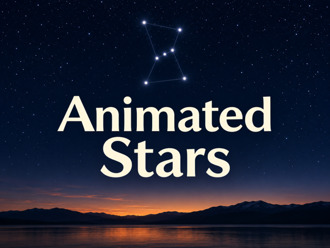

AN IMAGINED NIGHT SKY · ROKU SCREENSAVER
Animated Stars

Turn your TV into a quiet night sky with 2,486 catalog stars and 30 constellation figures. Watch the constellation gently appear. Choose Violet Mountains, Twilight Lake, Desert Mesa or Open Sky, and customize the horizon color and star rotation speed. Add subtle twinkle, occasional aurora, shooting stars, and your Roku's local clock and date. Reduced Motion slows the sky and pauses decorative effects. Animated Stars works offline, with no accounts, ads or subscriptions. Star patterns use Hipparcos catalog positions in an imagined rotating sky; this is not the current sky from your location or an observing guide. Aurora and shooting stars are decorative. Preferences and Credits & Licenses are available in Change screensaver settings. Press a remote button to leave the screensaver.
Set up your screensaver
For a copy lawfully provided to you, open Settings → Theme → Screensavers → Animated Stars on your TV. Select Set as screensaver, Preview to try it, or Change screensaver settings to customize it. Menu wording can vary by Roku OS. Press a remote button to leave playback.
Store availability is not confirmed. Get help or read the complete credits and source provenance.